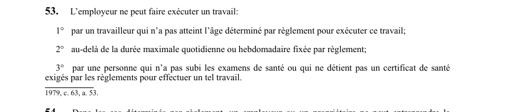

art-53-LSST : travaux interdits, âge, durée, santé
Un article du wiki ⚖️ Recueil législatif
En bref
- Une interdiction unique faite à l'employeur, déclinée en trois cas où il ne peut faire exécuter un travail.
- 1° âge : le travailleur n'a pas atteint l'âge minimal fixé par règlement pour ce travail précis.
- 2° durée : le travail dépasserait la durée maximale quotidienne ou hebdomadaire fixée par règlement.
- 3° aptitude médicale : la personne n'a pas subi les examens de santé exigés, ou ne détient pas le certificat de santé exigé pour un tel travail.
- Aucun chiffre n'est écrit dans la loi : l'âge, les durées et les examens sont tous renvoyés au règlement applicable.
🌐 LegisQuébec · 📄 PDF officiel (page 18)
Texte officiel : capture du PDF
{kind=link}

Toucher l'image pour l'agrandir🔗 Ouvrir a cette page : LSST.pdf : page 18 · texte a jour au 26 mars 2024
Voir aussi
- art. 51.11 : disposition abrogée · disposition-abrogée.
- art. 52 : registre postes travail travailleurs · obligation : l'employeur dresse et maintient à jour, conformément aux règlements, un registre des caractéristiques des postes de travail identifiant notamment les contaminants et matières dangereuses, et un registre des caractéristiques du travail exécuté par chaque travailleur.
- art. 54 : plans devis avant construction · faculté : dans les cas déterminés par règlement, un employeur ou un propriétaire ne peut entreprendre la construction d'un établissement ni modifier des installations sans avoir préalablement transmis à la Commission des plans et devis d'architecte.
- art. 55 : avis ouverture fermeture établissement · obligation : lorsqu'un employeur prend possession d'un établissement, il doit transmettre à la Commission un avis d'ouverture selon les délais et modalités prévus par règlement ; lorsqu'il quitte l'établissement, il doit de même transmettre un avis de fermeture.
- ↑ Loi : LSST
Pages qui pointent ici (9)
- 🎯 Démarrage rapide, conseiller SST Droit du travail
- 🎯 Démarrage rapide, direction et RH Droit du travail
- art-52-LSST : registre postes travail travailleurs Recueil législatif
- art-54-LSST : plans devis avant construction Recueil législatif
- art-55-LSST : avis ouverture fermeture établissement Recueil législatif
- LSST : Chapitre II : Droits et obligations Recueil législatif
- LSST, droits et obligations Droit du travail
- Obligations de l'employeur Droit du travail
- Régime CNESST Droit du travail